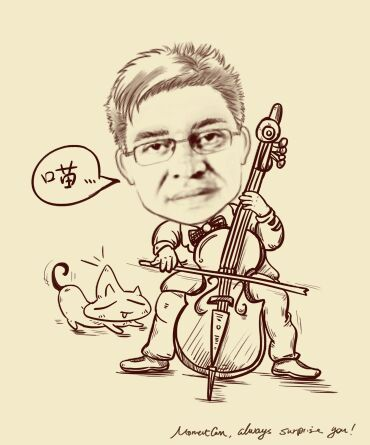
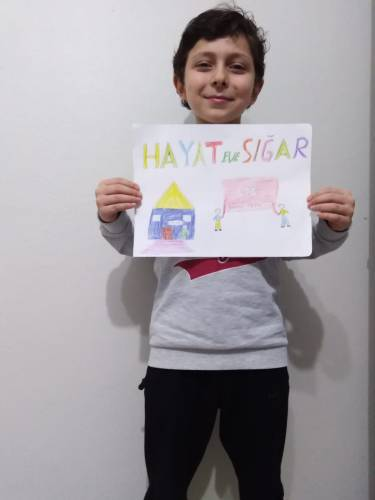
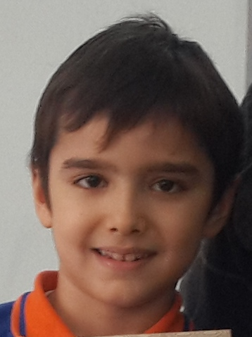

| Aktif Ziyaretçi | 1 |
| Bugün Toplam | 91 |
| Toplam Ziyaret | 139069 |
|
 |
|
| OSMAN FİLİK | |
| AYRILIK ZAMANI... | |
|
 |
|
| Yağız Aydın | |
| 23 Nisan Ulusal Egemenlik Ve Çocuk Bayramı | |
|
 |
|
| Mert Şeref | |
| 1 MAYIS EMEK VE DAYANIŞMA GÜNÜ | |